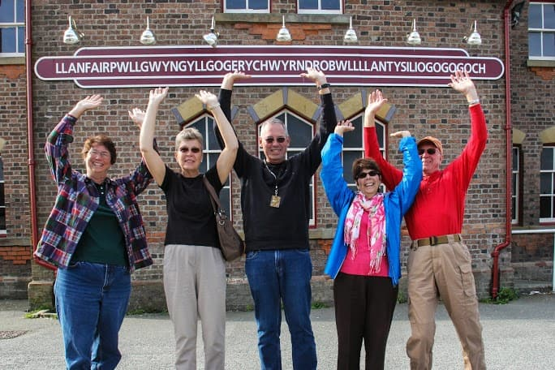

Llanfairpwllgwyngyllgogerychwyrndrobwllllantysiliogogococh
No tour to Wales would be complete without visiting the town with the longest name in Great Britain and Europe. It just happens to be on the Isle of Anglesey where we will stop for photographs of the famous railway station name and challenge you to our ‘famous competition!’